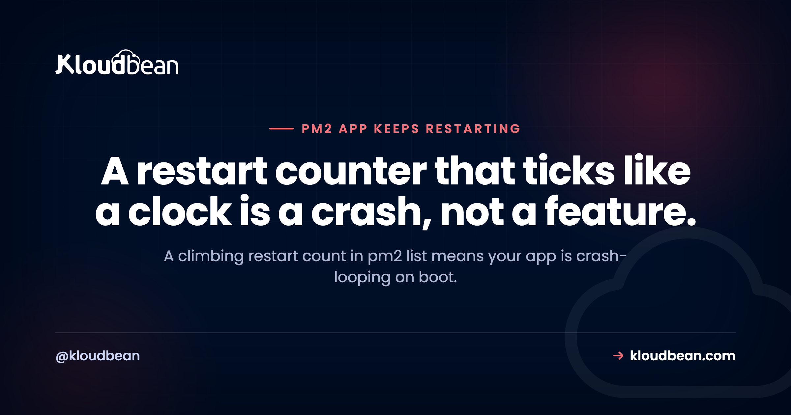

PM2 App Keeps Restarting: How to Diagnose and Fix the Loop

You check pm2 list and the restart column is climbing, 40, 60, 200, while uptime resets to a few seconds each time. Your PM2 app keeps restarting because it's crashing on startup, and PM2 is doing exactly its job: bringing a dead process back up. The counter is a symptom, not the disease. The good news is the real error is sitting right there in the logs, and once you read it the fix is usually quick. Here's how to diagnose the loop and stop it for good.
Because it's crashing shortly after it starts, so PM2 relaunches it, and it crashes again, a loop. The fix is always the same first move: run pm2 logs to see the actual error before each restart. It's usually a missing environment variable, a port already in use, a missing module, or a database that's unreachable on boot. Fix that root cause, then add min_uptime and max_restarts so a future crash is marked "errored" instead of looping forever.
What a restart loop looks like
Two tells in pm2 list (or pm2 status): the restart count (often shown as ↺) climbing fast, and uptime that keeps resetting to seconds. A healthy long-running server has a low, stable restart count and uptime that grows. If yours is spinning, the process is exiting almost as fast as PM2 starts it. Don't try to fix it blind, the next step tells you exactly why.
Step 1: read the logs (this is most of the fix)
PM2 captures your app's output, so the crash reason is recorded. Look before you theorize:
# Tail the logs, both output and errors
pm2 logs
# Just one app, last 200 lines
pm2 logs api --lines 200
# Restarts, exit code, uptime, memory for one app
pm2 describe apiYou're hunting for the stack trace or error line that repeats right before each restart. That single line usually names the problem: an Error: with a message, an EADDRINUSE, a Cannot find module, an ECONNREFUSED. Ninety percent of restart-loop tickets are solved the moment someone actually reads this output.
The usual root causes
Once you have the error, match it to the cause:
- Missing or wrong env var. The app reads a config value that isn't set, throws on boot, and dies. Check the environment for that process.
- Port already in use. An
EADDRINUSEon restart, often a stale process or two instances fighting for one port. See the EADDRINUSE guide. - Missing module or build. A
Cannot find modulemeans a dependency or build output isn't there. See the Cannot find module guide. - Database unreachable on boot. An
ECONNREFUSEDwith no retry crashes the app before it can serve. See the ECONNREFUSED guide. - Out of memory. A leak or a low
max_memory_restartmakes PM2 kill and restart the process. See the heap out of memory guide. - Unhandled rejection or exception. An error thrown outside a try/catch takes the whole process down.
Stop the infinite loop: min_uptime and max_restarts
Even after you fix the cause, you want a guardrail so a future crash doesn't spin forever and hammer your CPU. Two settings do this. min_uptime tells PM2 how long the app must stay up to count as a "successful" start, and max_restarts caps how many rapid restarts it tries before marking the app errored and stopping. Together they turn an endless loop into a clear failure you can see:
pm2 start dist/index.js --name api --min-uptime 10000 --max-restarts 10Now if the app can't stay up for 10 seconds after 10 tries, PM2 stops relaunching it and flags it errored, which is far easier to spot than a counter quietly climbing into the thousands.
Add backoff and handle crashes cleanly
A tight crash loop can peg a CPU. Adding a restart delay, ideally exponential backoff, spaces the attempts out so a struggling app doesn't take the box down with it. And in your code, make sure a stray rejection logs something useful before the process exits, rather than dying silently:
process.on("unhandledRejection", (reason) => {
console.error("Unhandled rejection:", reason);
process.exit(1); // let PM2 restart a clean process
});The goal isn't to swallow errors, it's to make them visible and let PM2 restart from a known state. If a specific dependency (a database, say) is the flaky part, prefer a scoped retry there over letting the whole app crash.
The "it exits cleanly" case
One sneaky variant: the app isn't crashing at all, it's finishing. If your script runs to completion and exits with code 0, PM2's default behavior brings it back up, because PM2 is built to keep long-running processes alive. Two common causes: you pointed PM2 at a one-off script instead of a server, or you have a server that forgot to actually listen. A real server should stay running because it's holding a port open:
// A server stays up because it's listening
app.listen(process.env.PORT || 3000, () => {
console.log("Listening on", process.env.PORT || 3000);
});If pm2 describe shows exit code 0 and no error in the logs, you're in this case, not a crash loop. For genuine one-shot tasks, use a cron job rather than an always-on PM2 process.
A solid ecosystem config
Rather than remembering flags, put the guardrails in an ecosystem.config.js so every deploy is consistent:
module.exports = {
apps: [{
name: "api",
script: "dist/index.js",
instances: 1,
max_memory_restart: "500M",
min_uptime: "10s",
max_restarts: 10,
exp_backoff_restart_delay: 100,
watch: false, // never true in production
env: { NODE_ENV: "production" }
}]
};One note that catches people: watch: true is great in development and a disaster in production, because PM2 restarts the app every time a file changes, including logs or uploads. If your production app restarts "for no reason," check that watch is off.
| Symptom | Likely cause | Fix |
|---|---|---|
| EADDRINUSE in logs | Port taken / duplicate instance | Free the port, run one instance |
| Cannot find module | Missing dep or build | Install/build before start |
| ECONNREFUSED | DB not reachable on boot | Fix host, add a scoped retry |
| Killed / heap OOM | Memory leak or low limit | Fix leak, set max_memory_restart |
| Exit code 0, no error | Script exits / no listen | Run a server, or use cron |
| Restarts on file change | watch enabled in prod | Set watch: false |
How Kloudbean runs PM2 for you
Kloudbean runs your Node app always-on under PM2, so the process management above is handled for you rather than something you wire up on a bare server. Your environment variables are set per app in the console (so the missing-env-var crash is less likely), logs are right there to read when something does go wrong, and deploys come from a GitHub push. You still own your app's behavior, a real bug in your code will still crash, but the plumbing that turns a crash into a visible, recoverable event is already in place.

Around PM2 App Keeps Restarting
PM2 depth and the specific crash causes are covered next door. Start with the PM2 process manager guide, then the error guides this article points to: EADDRINUSE, Cannot find module, ECONNREFUSED, and heap out of memory. For clean releases, see zero-downtime deployments.
Prototype to production, without the babysitting.
Run the app as an always-on process with managed databases, Redis, object storage, and automatic backups beside it. Deploy from Git with live build logs, and keep the infrastructure someone else's problem.
- ✓ Managed databases
- ✓ Always-on processes
- ✓ Object storage
- ✓ Automatic backups
- ✓ Free SSL
- ✓ Git deploy
- ✓ Free migration
FAQ
Why does PM2 keep restarting my app?
Because the app is exiting shortly after it starts and PM2 relaunches it, which is what PM2 is designed to do for long-running processes. The climbing restart count is a symptom of a crash on boot. Run pm2 logs to see the error causing the exit, fix that, and the loop stops.
How do I see why PM2 is restarting my app?
Run pm2 logs to watch the output and errors, and pm2 describe <app> to see the exit code, restart count, and uptime. The stack trace that repeats just before each restart names the cause, usually a missing env var, a port conflict, a missing module, or an unreachable database.
How do I stop a PM2 restart loop?
Fix the underlying crash first, then add guardrails: set min_uptime (how long the app must stay up to count as started) and max_restarts (how many quick restarts before PM2 marks it errored and stops). That converts an endless loop into a clear, visible failure instead of a counter climbing forever.
My PM2 restart count is really high, is that bad?
A high, still-climbing count with short uptime is bad, it means crash-looping. A high count that stopped growing (for example after a memory-limit restart earlier) can be harmless history. Check current uptime: if it's growing steadily now, the app is stable; if it keeps resetting to seconds, you're still looping.
What does max_memory_restart do?
It tells PM2 to restart the process if it exceeds a memory threshold, like 500M. It's a safety valve for leaks, not a cure, if the app grows past the limit repeatedly you'll see regular restarts. Fix the leak, and size the limit to something realistic for your app so normal usage doesn't trip it.
Does PM2 restart my app if it crashes?
Yes, that's a core feature, PM2 keeps long-running apps alive by restarting them on exit. That's great for genuine one-off crashes and bad when the app crashes on boot, because it loops. Pair it with min_uptime and max_restarts so a persistent failure is flagged rather than retried endlessly.